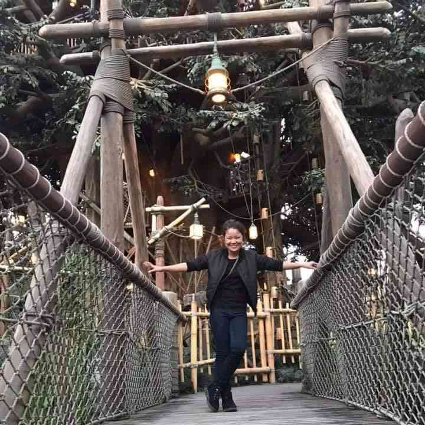
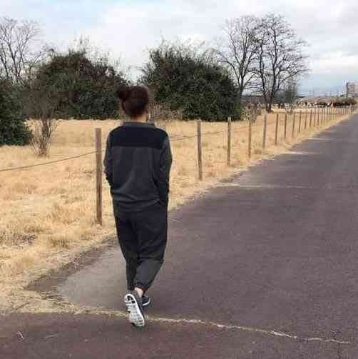
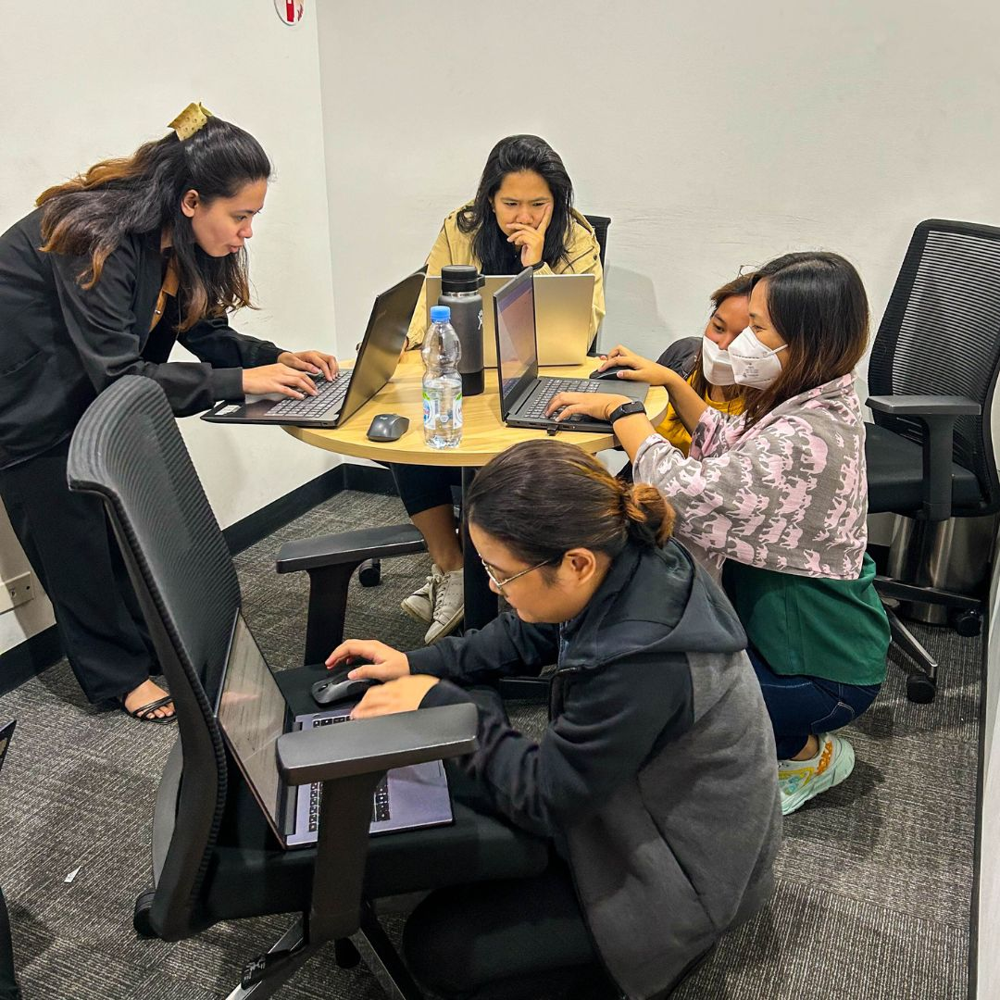
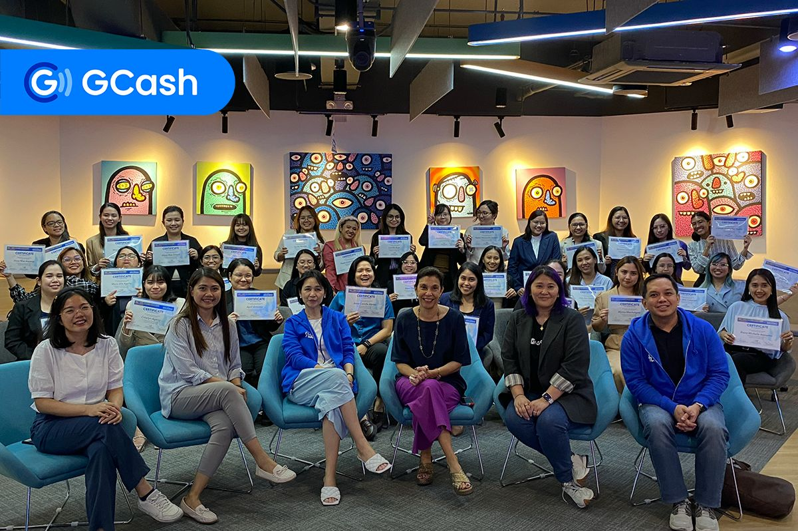
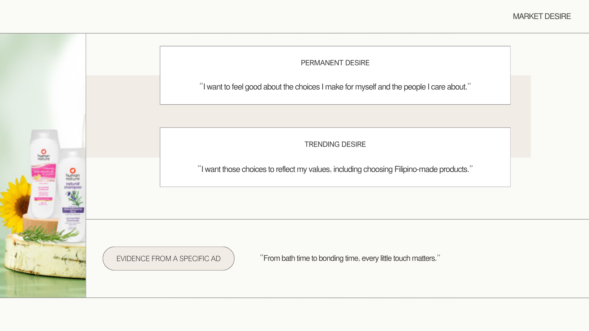
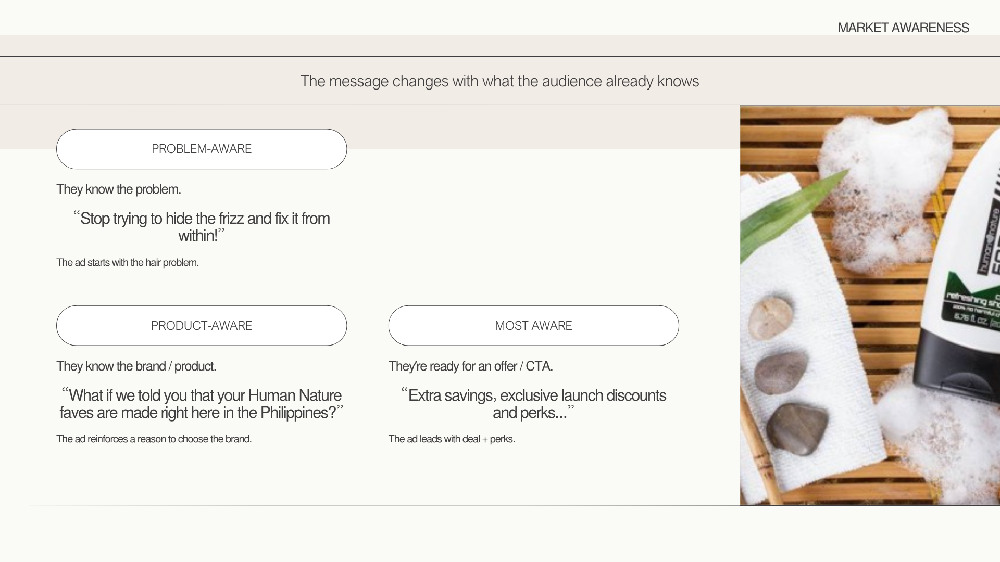
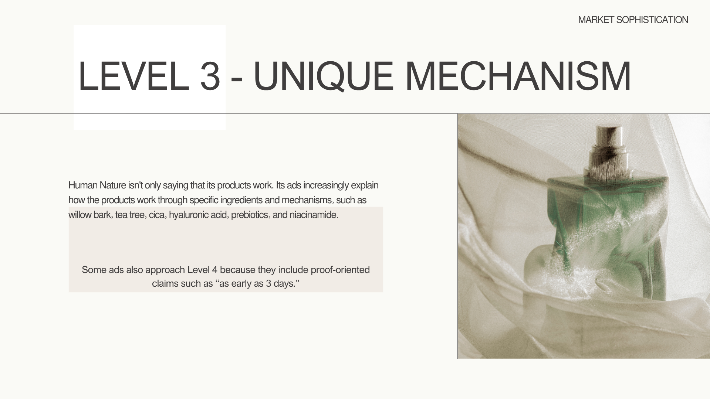

Training to be an Ads Strategist & Media Buyer




I started my career in 2014 as a Product Design Engineer in the automotive industry , designing systems, solving technical problems, and collaborating with global teams. In 2017, I was deployed to our Japan branch , an experience that strengthened both my technical expertise and my ability to work in an international environment. Over nearly nine years in engineering, I developed a strong analytical mindset, attention to detail, and a structured approach to problem-solving.
During the pandemic, I became increasingly interested in data and analytics. What started as curiosity gradually became a new career direction. In 2023, I decided to leave engineering and take the leap into a different field. That same year, I was accepted into a Data Science scholarship program , where I built my foundation in data analysis and began translating my engineering problem-solving skills into data-driven work.
In 2024, I landed a role as a Reporting Analyst , officially beginning my career in analytics. Since then, I've been designing dashboards, automating reporting processes, and turning complex datasets into clear, actionable insights that help the business make better decisions.
In 2026, I expanded my focus into digital advertising strategy and media buying . I enrolled in the FAMA Elite Meta Ads Masterclass to develop my skills as an FB Ads Strategist and Media Buyer .
Looking back, my career has evolved from engineering → analytics → digital advertising , but the common thread has always been problem-solving through data and structured thinking.
My goal now is to bridge analytics and advertising — combining my analytical background with advertising strategy to understand not only what the numbers are saying , but also what actions to take because of them . I want to use data to guide smarter ad spend decisions, identify opportunities for optimization, and develop campaigns that resonate with the right audiences and ultimately convert.
Applying the 3Ms of Marketing framework to Human Nature ads.

In this case study, I analyzed Human Nature's ads to identify customer desires. The messaging reflects a demand for natural personal care and Filipino-made authenticity, tied to wellness and eco-conscious pride.

My analysis showed Human Nature's ads span different awareness stages — from problem-aware to most aware. This demonstrates broad positioning but also highlights the risk of diluted focus.

Reviewing Human Nature's messaging, I found they lean into unique benefit positioning (locally made, eco-conscious) and sometimes reach identity-driven storytelling (Filipino pride). This helps them differentiate from generic wellness brands.
Email: aprilarmintia@gmail.com
LinkedIn: linkedin.com/in/aprilarmintia